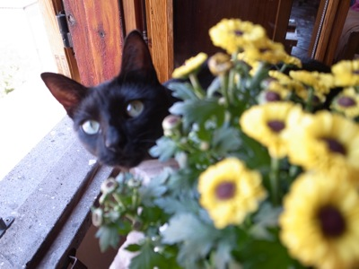

Experiment + Lamb
Blank paper, empty screen, blinking cursor are sometimes sprayed with words as if my fingers were a machine gun and formation wasn’t an obstacle. But most times I place my words down slow, looking for the “right,” painstaking and fussing over minor details. But isn’t that the way of most anything?
Last night I was reading The Black Warrior Review’s Spring/Summer issue, then searched for a few writers online, and came to what they call experimental writing. Experimental paired with writing is a sine qua non if you ask me. What could be put onto paper, onto a screen, that doesn’t experiment? Anytime words strive to express, an expression that has not yet been written, that is an experiment. Whenever one is experimental to be experimental, then one is conforming to the norm. I’ve always hated classifications.
I don’t care what’s an “experiment” and what’s not. I care about words touching.
In the middle of my reading, last evening, I made lamb for dinner. At the macelleria, the macellio brought out the lamb’s pink carcass from the fridge swinging on a butcher’s hook. And as he hacked at it, I had to turn away. The knife whacked open the bones, separating the meat we would eat, sounding like cracks from life. We took the meat home, surrounded it with potatoes, put it into the oven then ate.
A machine gun of words: bam-bam-bam! Or a slow rowing. A swirl of words in my stomach. What does it matter if I’ve gotten this far without a beginning or an end?

La Storta with Yellow Flowers
· · · · · · · · · · · · · · · · · · · ·